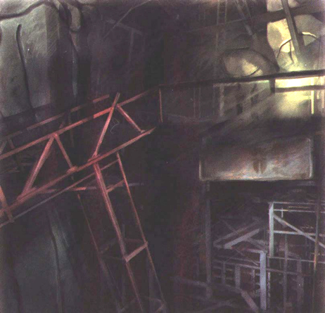

Diary Entry 5: (Valley) Excavation Site # 4 In Pursuit of Craymen The Captain said the Black Fleet headed north, so the dragon an I headed through the Valley to Excavation Site # 4. The place was full of mining equipment. All around us we could see massive cranes, intricate mining tunnels, gigantic fans, which almost blew the dragon away, to the smallest of all, simple mining carts. As we flew throughout the Valley, we came upon a wind net, which was used to keep monsters away. It was obstructing our path, so we had no choice but to find a way to shut it down. We soon found some sort of Ancient Age device. It made the most ear pounding noise! I had the dragon shoot its lasers at it and our ears were relieved to gentle silence. The rumbling had stopped, we were successful in shutting down the device. It must have been a generator providing energy to the wind net, because once we deactivated it, the wind net came to a complete stop. Now we could enter, without getting blown away.The only problem was, monsters could also enter. I hope I didn't make a grave mistake.The dragon and I made our way past the rows of gigantic fans to the exit.  |
|
| Divine
Overview |
1. When you arrive at Excavation Site # 4, be sure not to miss the mine tunnels that can be found along the Valley on the right and left sides. |
2. You can acquire hidden items from mine carts throughout the Valley. |
3. Try locking-on to the mine cart near the map device. I'ts fun to make the cart move along to the mining tunnel by itself. |
4. On your journey through the valley you will come across a series of fans, all of which you can lock-on to. The problem is, you can't acquire the items found inside the fans until your dragon is laser rank # 6. And that's not until the end of the game. So you will have to come back later. |
5. Edge encounters a wind net and cannot pass. |
6. Lock-on to the mine cart near the wind net, it explodes off the ledge like a rocket! |
7. Enter the tunnel to the far left of the wind net. |
8. You will find the generator which powers the Albertson Fans. Lock-on and deactivate the device. |
9. Once the generator is shut down, the wind net comes to a complete stop. |
10. Pass through the row of fans, and make your way to the exit. Your next destination is Canyon Deep Gulch. |